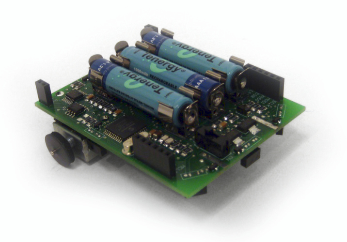
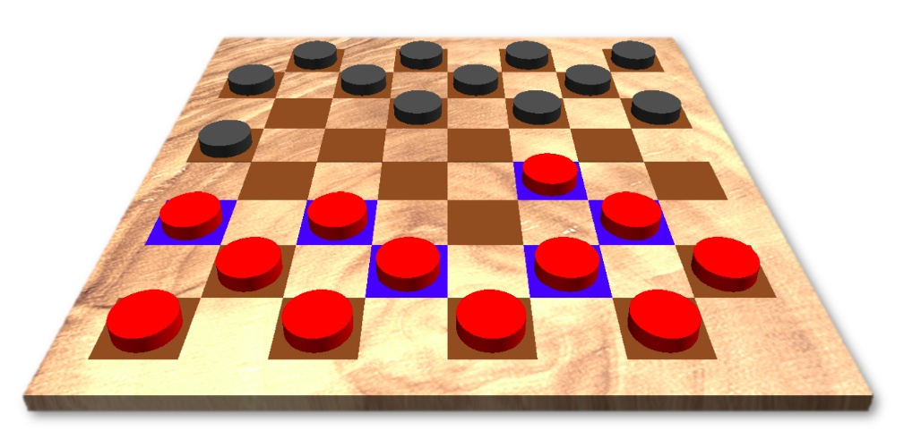
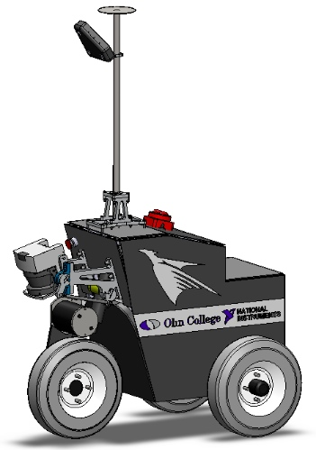
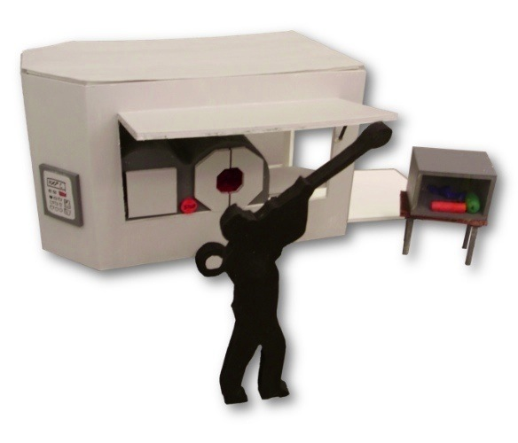

2009
| Low-Cost Swarm Robotics Platform |
Oct 2009 - Dec 2009 |
As a research project under the supervision of Dr. Gill
Pratt, I designed and fabricated a low-cost, expandable
robotics platform for use in research and education. This
included circuit design, component selection, PCB layout,
and system integration. The robot featured a 12 MIPS
processor, infrared communication and obstacle detection,
motor feedback, LED indicators, and an expansion port. The
final design had a component cost under $20, making it one
of the least expensive programmable mobile robots available.
|

final, assembled robot
|
|
top view
|

side view
|
 |
Daniel Grieneisen, Jacob Izraelivitz, Nicholas Hobbs, Dr. Gill Pratt (faculty) |
| 3D Checkers Game |
Nov 2009 - Dec 2009 |
As a final project in my Software Design course, I worked
with two other students to create a 3-dimensional checkers
game in Python.
|

screenshot of the final interface
|
|
Xavier Ziemba, Sabrina Thompson |
| FPGA Breakout Arcade Game |
Dec 2009 |
Inspired by the classic Atari arcade game, a few classmates
and I recreated the game Breakout in Verilog using a
Spartan-3 field-programmable gate array (FPGA) for our
Computer Architecture course. The system included a custom
input controller, and output mono sound and VGA video.
|
Atari Breakout arcade game (image source: The Arcade Flyer Archive)
|
|
FPGA game hardware
|
testing the game
|

VGA output
|
|
Daniel Grieneisen, John Watson, Lindsay Kaye |
| USB Multichannel Analyzer |
Jun 2009 - Dec 2009 |
While working with the NASA / Olin Research Group
I designed, built, programmed, and tested a low-cost USB
multichannel analyzer (MCA) for use in NASA x-ray
spectrometry experiments. This included high speed circuit
design, component selection, PCB layout, and firmware
programming. Typical MCAs cost several thousand dollars; our design cost under $40
in components and provided the same functionality.
|
NASA Goddard Space Flight Center (source: CTSI)
|
functional breadboard MCA
|
|
final hardware testing
|

inside the case
|
|
screenshot of GUI measuring 55Fe source
|
|
Sam Sun, Chen Wang, Dr. Stephen Holt (faculty), Dr. Bradley Minch (faculty) |
| Laser Alignment System |
Jun 2009 - Aug 2009 |
During the summer of 2009 as part of the
NASA / Olin Research Group,
I worked on a laser alignment
system for the X-Ray Advanced Concepts Testbed (XACT)
sounding rocket being developed at Goddard Space Flight
Center. My team designed and built a proof of concept system
capable of measuring extremely small tilts and lateral
displacements between the ends of the payload. These
measurements allow for corrections to be made to the
precision x-ray optics which may become misaligned due to
the stresses and vibrations of launch. For this project I
created custom test electronics in addition to aiding in the
overall design and testing.
|
model of XACT sounding rocket
|
|
prototype electronics
|
test optics
|
|
Clay Gimenez, Steven Higgins, Daniel Elg, Dr. Stephen Hold (faculty) |
| Intelligent Ground Vehicle Competition |
Feb 2009 - Jun 2009 |
In the course of a single semester, four other sophomores and I designed, constructed,
programmed, tested, and competed a fully-autonomous off-road
vehicle that followed lanes, avoided obstacles, and
travelled to GPS waypoints. We placed second out of first-year teams at the
2009 International Ground Vehicle Competition (IGVC) in
Detroit.
|

engineering model of Brian, the 2009 Olin IGVC entry
|
|
building the robot over break
|
competition tent
|
|
Brian at competition
|
debugging at competition
|
|
Nicholas Hobbs, Daniel Grieneisen, Jacob Izraelivitz, Arash Ushani |
 |
2nd out of first-year teams at the International Ground Vehicle Competition in Detroit, MI |
| User-Oriented Collaborative Design |
Feb 2009 - Apr 2009 |
As part of an extended design exercise in one of my classes, I worked with a group
of Boston glassblowers to design a novel product. I studied
glassblowers and their work, identified areas of opportunity,
generated ideas, led collaborative design exercises,
explored possible interfaces and interactions, and refined the ideas to
ultimately create a real-world solution to improve the lives of
these artists. Through this process, my team and I developed
a mobile studio that would allow glassblowers to connect to
customers in new and exciting ways.
|

model of mobile glassblowing studio
|
|
glassblower at work during user visit
|
glassblowing studio
|
|
initial observations and impressions
|
|
design exercises
|
brainstorming
|
gallery sketches
|
|
initial model
|
interaction map
|
|
model of portable studio
|
public demonstration
|
packed trailer
|
|
Neil Paulson, Velin Dimitrov |
| Baja SAE Autimotive Design |
Oct 2007 - Dec 2009 |
Interested by the inner workings of cars, I joined the
Olin College Phoenix Racing team.
Along with a team of other engineering students, we designed
and built an off-road vehicle in our spare time to compete
in the SAE Mini Baja competition. As part of the team
charged with designing the chassis, I helped design a
rules-compliant frame and performed a series of structural
engineering tests (finite element analysis). I further
helped with machining and designing the electrical system.

finite element analysis of 2008 chassis
|

vehicle during testing
|

team at competition
|
|
final adjustments
|
vehicle at competition
|
|
team of 20+ students |
previous year | timeline | next year